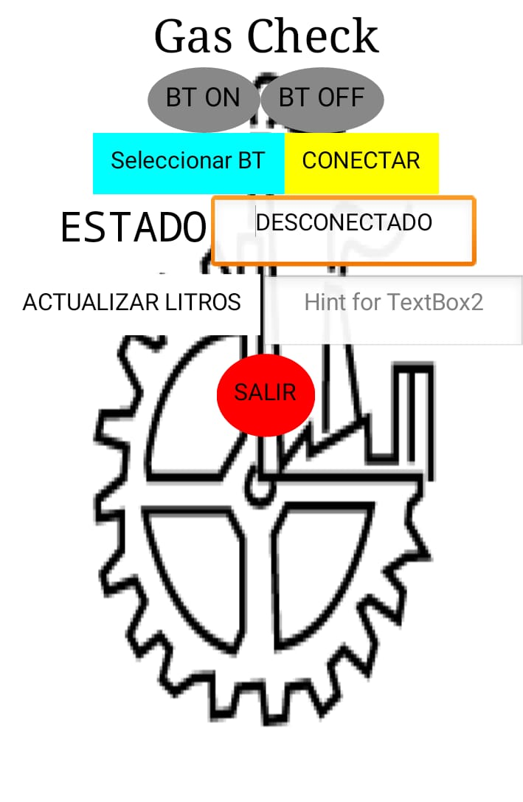

Hola.
Ingeniero recién egresado de electrónica, fuerte interés en crecer en el mundo de la tecnología y en el desarrollo web. Apasionado por la tecnológica, con mucha motivación para nunca parar de aprender y compartir mi conocimiento con los demás.
Mis Habilidades.

Diseño y desarrollo
Soy aficionado a la programacion, siempre quiero aprender nuevas cosas, he desarrollado sitios web, para ejemplo este mismo, aplicaciones mobiles, hasta pequeños prototipos de videojuegos, soy amante de la programacion y sigo aprendiendo cada dia.
Conocimientos
- Programacion estructura. Nivel:⭐⭐⭐✰✰
- Programacion orientada a objetos. Nivel:⭐⭐✰✰✰
- Programacion de microcontroladores. Nivel:⭐⭐⭐✰✰
- Procesamiento digital de señales. Nivel:⭐⭐⭐✰✰
- Diseño de circuitos. Nivel:⭐⭐✰✰✰
- Diseño FrontEnd ⭐⭐✰✰✰
Proyectos Personales.
EASYBIB
El proyecto consiste en desarrollar una maquina la cual es un preparador de biberones automático bajo la perspectiva del internet de las cosas. Esta máquina tiene la capacidad de conectarse a una aplicación móvil, desarrollada en Android Studio con Java, esta app se enlaza a un servicio con Firebase y con esto la maquina es capaz de programarse y enviar notificaciones al usuario de que se comenzó a prepar un biberón de forma automática, la maquina está hecha con arduino y cuenta con conectividad a internet.
Gas Check Medidor de gasolina en tiempo real
Este proyecto se llevo a cabo en el desarrollo de una aplicación la cual involucra diversas áreas del conocimiento como es la programación, control de microcontroladores y sensores con la finalidad de crear una aplicación móvil, basada en un dispositivo de control con el cual sea introducido en el tanque de gasolina de nuestros vehículos y poder censar el caudal en tiempo real lo cual permite tener una seguridad a la hora de ir a cualquier establecimiento gasolinero generando una interacción entre la aplicación, usuario y dispositivo, y así por fin poder acabar con las anomalías en las empresas gasolineras las cuales crean descontento en la población debido a algunas malversaciones del equipo de las mismas.
Diseño en HTML y CSS de pagina BatataBit
Con lo aprendido en HTML y CSS se desarrollo el diseño de una pagina de criptomonedas. Batatabit te ayuda a navegar entre los diferentes precios y tendencias.
Canal de tik-tok.
En mis tiempos libres los utilizo para realizar videos en tiktok, en donde enseño lo que voy aprendiendo dia a dia, siendo un desarrollador en desarrollo.